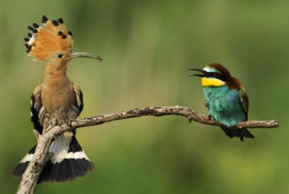

¿Tribus urbanas?No, aves cercanas |
|
|  | Aunque puedan parecer mienmbros de distintas tribus urbanas lo cierto es que la abubilla (Upupa epops) y el abejaruco europeo (Merops apiaster) son aves que podemos contemplar muy cerca de nosotros |
| Si salimos a dar un paseo por el campo en primavera o verano quizá las veamos. Ambas son muy llamativas por su plumaje y colorido. | |
¿Te las vas a perder? |
|